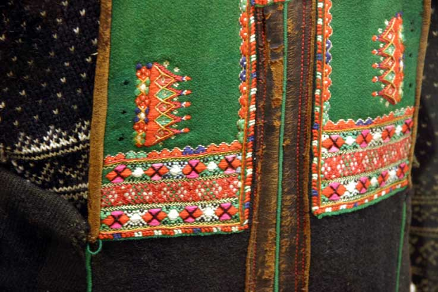
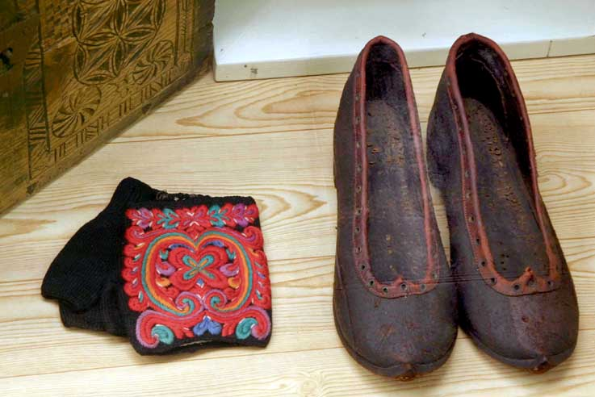
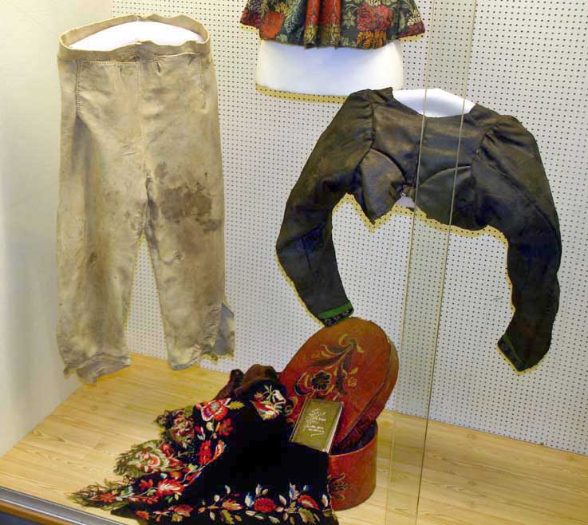

Vest-Agder Fylkesmuseum - Bondedrakter
Foto: Torvald Slettebø, Universitetet i Agder, Seniorsenteret
Konsulent: Konservator Kirsten Bertheau Nøklebye
Bygdedraktutstillingen viser folkedraktene slik de har vært brukt opp igjennom tidene i Setesdal og Vest-Agder. Monteren til høyre viser dåpsplagg og babylue-stas med flotte tradisjonsrike broderier.
Kinn-plagget vsar både dåpsplagg og hvedaagsplagg i Setesdal, og ble brukt helt opp til vår tid. Kinnplagget har fargerike broderier på bomullslerret, med bruk av gamle internasjonale symboler, svastikamotiv og Andreas-kors.
Disse luene ble brukt både i forbindelse med dåp, men også senere. De kaltes dreggilshuve. Luetypen har sin opprinnelse fra middelalderen.

Dåpssmekker og dåpsluer både for gutt og jente, fra Vest-Agder. Slike dåpssmekker er en gemmel tradisjon fra 1800-tallet.
Nærbilde av dåpssmekke med gull og sølv kniplinger, og silkebånd.
Denne dåpssmekken er noe yngre, men har mye av den samme utsmyknikngen.
Dåpslue til en jente, på 1800-tallet.
Dåpslue i brosjert silke, og sølvbrochert.
Oversiktbilde av monteren. Til venstre viser dåpstøy fra Setesdal, og sølv til Setesdalsdraktene. Til høyre dåpstøy fra Vest-Agder, og sølv til Vest-Agder- draktene.

Sølv til Setesdalsdraktene. Øverst halsknapper. I rad nr. 2 hornringer. Rad nr 3 trøyespenner i ulike fasonger, og det som kalles spretter.
Trøyespenne med filigransarbeid.
Tre forskjellige halsknapper til skjorten.
Rosesøljer
Maljer med løv til trøya. Til høyre en lekkjedaler.
Bringesølje med løv.
Halsknapper til Vest-Agder-drakten, brukt øverst på skjorten.Til høyre hjertesølje med løv.
Filigransarbeid: Beltespenner, spretti, i sølv. Nederst en gruppe maljer med løv, til trøya. Til Setesdalsdrakt.
Stølebelte til Setesdalsdrakkten, brukt av bruden.
Sølv til Setesdalsdrakten, skospenne og trøyespenner.
Skospenner, Setesdal.
Vi går over til å presentere draktene, først Setesdal: Mann og kvinne kledd til helg.
Detalj av forrige mannsdrakt: Halsknapper, hornring, trøyespenne, maljer, og håndbroderi.
Heklet blonde på skjorte, og rosesølje i bringen.
Kvinnedrakten her har to stakker, en hvit understakk, og en svart over. Broderi nederst på mannsbuksa. Svarte sokker til kvinnedrakten, og hvite til mannen: Krota karasokkar. Vevde sokkeband, broderte vanter, og snipe-sko.

Mønsterstrikking, og broderi.
Både småjenter og voksne kvinner gikk med de rosete hodetørklerne, kjøpt av kramkarer, eller på bytur til Kristiansand.
Detalj av rundtrøya til mannsdrakten.
Oversikt over draktene fra Setesdal. Fra venstre brudedrakt med tre stakker, videre barnedrakter, gutt og jente, og så et voksent par, helgekledd.
Guttedrakten: Hvit skjorte, hornring, strikket kofte med lus, bukse med brodert bukse-lokk. Jenta har kvitstakk, understakken i den voksne drakten. Kvitstakken ble også brukt sommerstid.
Detalj av skjorte med håndknyttet blonde. Skinnseler med spenner i messing.
Detalj av bukselokket med broderi.

Vevet belte som kaltes jure, med jure-spenne.
I Setesdal ble bruden ikledd tre stakker, med bestemte farvebånd nederst, dessuten silkestøkle, mye sølv, og et kjede med mynt som kaltes Agnus Dei.
En praktfull bringesølje. Ned fra skuldrene maljer med løv, og et stølebelte hvor silketørklene på hver side er festet.
Detalj av de tre stakkene: Nederst den hvite med svarte bånd, så den svarte helgestakken med rødt bånd, og så den røde, som brudens røde, med grønt bånd. Silketørklene ble kjøpt.
Detalj av kjede med mynt og løv, kalt Agnus Dei, Guds lam.
Kjedet skulle være så langt at det lå i fanget til bruden.
Skrin med karveskurd og flatskurd ble brukt til å ha tekstiler i på reise, til kirke eller lenger. Skriner til høyre er fra 1642, ett år etter Kristiansands grunnleggelse.
Mannsbelte med jurespenne og messingnagler.
Halvvanter, kalt muffler, og sko, til kvinnedrakten.

Hatteklut, korsstingsbrodert med ullgarn på lin. På brudgommens hatt. Fra 1774.
Kjole fra Øvrebø omkring 1900. Bymotene begynner å komme inn. Bak: Ruteåkle fra Vest-Agder.
Familiealbum med portrettfoto ble etter hvert vanlig, og gjester måtte gjerne bla idet, til kaffekoppen.
Eksempler på broderier, vanlige kvinnesysler.
Oversikt over folkedrakter brukt i Vest-Agder.
I Vest-Agder brukte den gifte kvinnen "vase". Vasen skulle settes så langt bak på hodet at skautet falt fritt nedover ryggen. I det hverdagslige kunne en godt bruke bare vasen, med tørkledet brettet rundt pannen.
Detalj av draktskikken i Vest-Agder. Vi ser stripestakk, løslomme, forkle med vevde seler. Hun har trøye, og vi ser de broderte sjalene til venstre i bildet.
Når kvinnene i Vest-Agder sto brud, brukte de en slik hodepynt, kalt reisle. Denne er fra ca 1850.
Vest, kalt opplut, sett bakfra. De finnes i fargene rødt, grønt eller svart ullstoff, men i eldre tid også andre stofftyper. Skjæring i ryggen med midtsøm og to skrådde sidesømmer, som ender opp ii en liten kløv. Kløven var opprinnelig to dype folder. I bakgrunnen et litt mer uvanlig sjal, vøreklut (?) i hvitt med broderier. Vanligere var svart.
Brudgomsdrakt fra Eiken, fra 1850-årene. Brudedrakten er fra Konsmo i Audnedal ca 1860. Denne brudedrakten ble siste gang brukt i 1971.

Detalj av bringekluten til brudedrakten.
Brudereisla fra Konsmo, ca 1860.
Som i Setesdal hadde også bruden i Vest-Agder det lange kjedet med et Agnus Dei.
Brudgommen hadde høy hatt med knyttet hatteklut.
Detalj av antrekket til brudgommen. Vi ser de store sølvknappene i halsen, i filigransarbeid, knyttet silketørkle hørte med, hjertesølje, og sølvknappene, kolleknappene, i jakken.
Oversiktsbilde av draktskikkene i Vest-Agder.
Viser tidlig draktskikk i Vest-Agder.
Den gifte kvinnens hodeplagg, med vase og skautet knyttet. I skjoeten sitter sølvknapper, hjertesølje med løv. I uppluten, vesten, som er av ulldamask, ser vi snørekjede med spyd.
Øverst i halsenbringering. Linskjorte.
Når kvinnene skulle gifte seg, så anskaffet de gjerne plissert stakk. Rundt 1900 begynte det å komme broderte forkler. Tidligere hadde de forkle av annet materiale, mønstret, gjerne stripet.
Brudevest, upplut, i ulldamask, fra Øvrebø ca 1750-1790. De lange foldene bak har rokokko-preg.
Knebukser i skinn fra tidlig 1800, kalt klassebukse.

Fra rokokkomoten med de llange foldene kryper den oppover i løpet av 1800-tallet, til det ble den likke kløven.
Etter 1850 begynte de å brodere blomster på sjalene. Sjalene i Vest-Agder kalte de høreklut.
Bygdedraktutstillingen på Vest-Agder Fylkesmuseum ble fornyet i 2002 ved hjelp av følgende fagpersoner:
Husflidskonsulent i Vest-Agder Katrine Holmegård Bringsdal, Dag Olav Hagen fra Bondeungdomslaget, administrasjonsleder og designer Agnete Kjellin og konservator Kirsten Bertheau Nøklebye, begge fra museet.